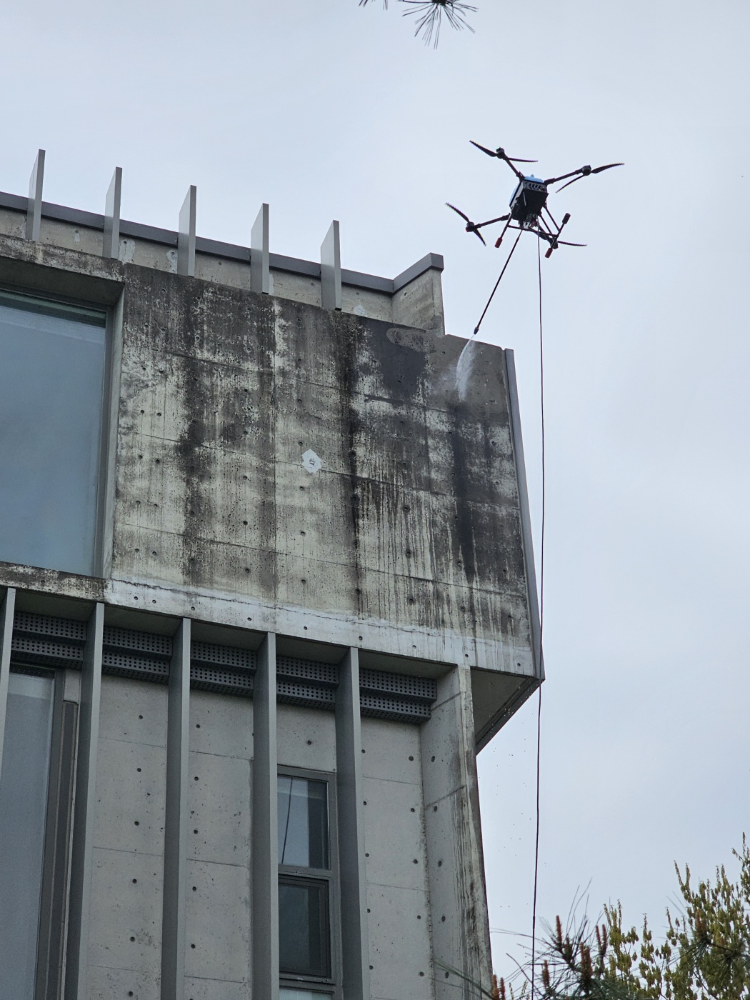
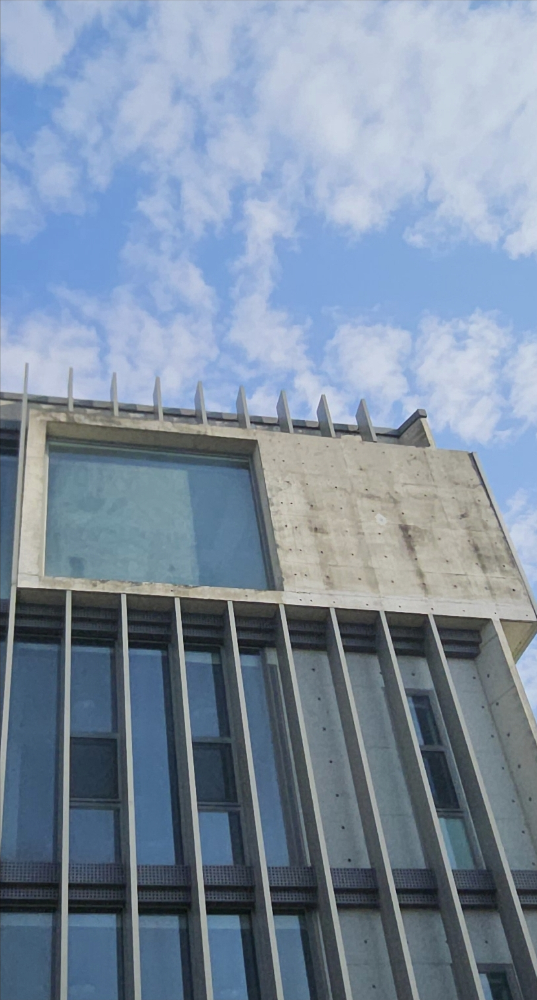

이륙하는 순간 깨끗함이 시작된다.
한국드론청소
고층·대형 건물 외벽의 오염을 현장 조건에 맞춰 확인하고
청소드론을 활용한 외벽청소 방법을 상담합니다.
청소드론을 활용한 건물 외벽청소 현장과 실제 청소 대상 외벽입니다.


높은 곳의 외벽을 현장 조건에 맞게 청소하는 방법을 제안합니다.
KDRONE26 · 한국드론청소는 청소드론을 활용하여 건물 외벽의 오염 상태와 주변 환경을 확인하고 현장에 적합한 청소 방법을 상담하는 전문업체입니다.
건물의 높이와 외벽 재질, 오염 정도, 주변 시설물, 접근 조건 등을 종합적으로 확인하여 작업 가능 여부와 적합한 작업 방법을 검토합니다.
건물 전체 외벽뿐만 아니라 오염이 집중된 특정 구간을 대상으로 부분적인 청소 방법도 상담할 수 있습니다.
높은 건물의 외벽은 작업 위치와 접근 방법을 먼저 확인해야 합니다. 건물 높이와 주변 환경을 확인하여 드론을 활용한 작업 가능 여부를 상담합니다.
공장과 창고는 넓은 외벽 면적과 높은 구조물이 있는 경우가 많습니다. 건물 구조와 주변 작업환경을 확인한 후 적합한 청소 방법을 검토합니다.
상가, 업무시설 등 외부 오염이 눈에 잘 보이는 건물의 경우 건물 전체 또는 특정 구간을 대상으로 외벽청소를 상담할 수 있습니다.
사람이 직접 접근하기 어려운 높은 위치나 구조물은 현장 조건을 확인한 뒤 청소드론 활용 가능 여부를 판단합니다.
건물 위치와 높이, 외벽 구조, 주변 시설물, 오염 상태 등을 확인합니다.
드론 비행과 청소 작업에 영향을 줄 수 있는 주변 환경과 현장 조건을 검토합니다.
외벽의 재질과 오염 상태, 작업 범위를 고려하여 현장에 적합한 청소 방법을 상담합니다.
전체 외벽 또는 필요한 구간을 기준으로 작업 범위를 정하고 견적을 안내합니다.
사전 확인된 작업 조건과 안전관리 기준에 따라 청소드론을 활용한 외벽청소를 진행합니다.
청소드론을 이용한 건물 외벽청소는 단순히 드론을 띄우는 작업이 아닙니다. 건물 주변의 사람과 차량, 전선, 시설물, 장애물 및 비행환경을 종합적으로 확인해야 합니다.
✔ 작업 전 건물과 주변 환경 확인
✔ 드론 비행에 영향을 줄 수 있는 장애물 확인
✔ 작업구역 주변 사람과 차량의 안전 확인
✔ 외벽 재질과 오염 상태 확인
✔ 기상 및 현장 상황에 따른 작업 가능 여부 판단
✔ 필요한 경우 작업구간을 나누어 진행
건물의 높이, 외벽 재질, 오염 상태와 주변 환경에 따라 작업 방법과 가능 여부가 달라질 수 있습니다.
KDRONE26은 현장 조건을 확인한 후 적합한 청소 방법을 상담합니다.
건물 전체를 청소할 필요가 없는 경우 오염이 심한 특정 외벽이나 특정 구간만 선택하여 부분청소를 상담할 수 있습니다.
부분청소는 작업 대상과 위치를 명확하게 확인할 수 있어 필요한 구간을 중심으로 작업 범위를 검토할 수 있습니다.
현장 사진과 위치 정보를 보내주시면 청소 가능 여부와 적합한 작업 방법을 상담해드립니다.
모든 건물이 동일한 조건은 아닙니다. 건물 높이, 외벽 재질, 주변 환경, 장애물 등을 확인한 후 작업 가능 여부를 상담합니다.
높은 건물도 현장 조건에 따라 드론을 활용한 청소 방법을 검토할 수 있습니다. 건물의 높이와 주변 환경을 먼저 확인합니다.
네. 오염이 집중된 특정 구간을 대상으로 부분청소를 상담할 수 있습니다.
건물 위치와 외벽 사진, 대략적인 높이 및 청소가 필요한 구간을 보내주시면 현장 조건을 확인하여 상담합니다.
서울·경기·인천을 비롯하여 전국 지역의 건물 외벽청소 현장을 상담합니다.
건물 외벽청소 · 고층 외벽청소 · 공장·창고 외벽청소
부분청소 · 시설물청소 · 청소드론 작업 상담
서울 · 경기 · 인천 · 강원 · 충청 · 전라 · 경상 · 제주
전국출장가능